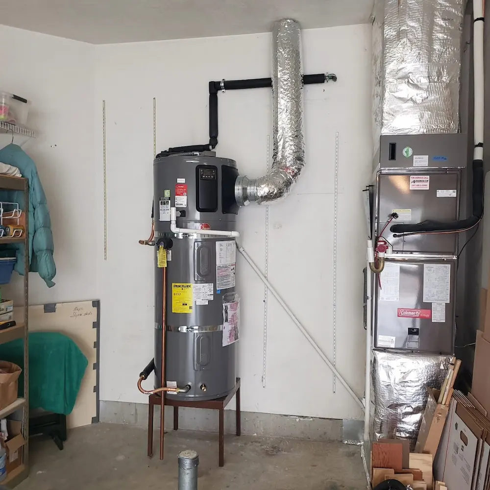
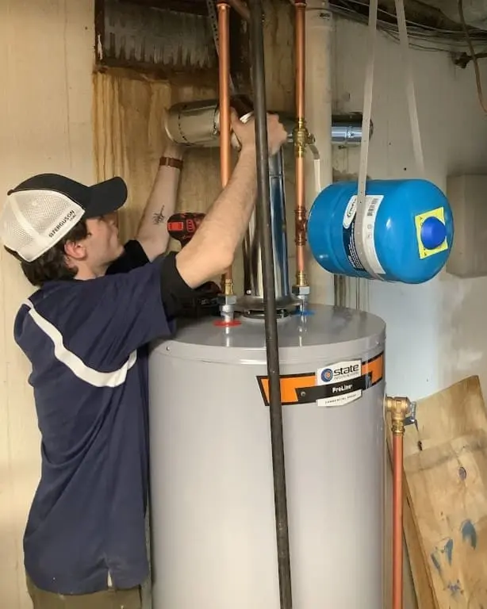

Heat Pump Water Heater Repair in Nampa

Heat pump (hybrid) water heaters are significantly more energy-efficient than conventional electric units, but they have more complex components that require specialized repair expertise. Nampa Water Heater Pros technicians are trained on the heat pump circuit—compressor, refrigerant, fan motor, and control systems—in addition to the standard electric backup elements.
Common Heat Pump Water Heater Problems
- Error Codes / Display Faults — Modern heat pump water heaters have diagnostic systems that display error codes when something is wrong. Common codes relate to fan motor, compressor, temperature sensors, or refrigerant pressure. We diagnose and clear codes properly—not just reset them.
- Unit Running in Electric-Only (Emergency) Mode — This means the heat pump circuit has failed or been bypassed. You're still getting hot water, but at 2–3× the energy cost. The most common causes are fan motor failure, low refrigerant, or a control board issue.
- No Hot Water at All — Could be a control board failure, a failed compressor (rare but possible), or a failed electric backup element.
- Inadequate Hot Water / Long Recovery — Refrigerant charge issues, a dirty air filter restricting airflow, or a degraded compressor reduce heat pump efficiency and extend recovery times.
- Condensate Leaking — Heat pump water heaters produce condensation as a normal part of operation. If condensate is pooling excessively, the drain line may be clogged or the unit is positioned on an uneven surface.
- Loud Operation — Fan motor bearing wear, loose housing panels, or refrigerant issues can cause unusual noise from heat pump units.
Heat Pump Repair Cost in Nampa
| Repair Type | Typical Cost Range |
|---|---|
| Fan motor replacement | $250 – $450 |
| Thermistor / sensor replacement | $150 – $300 |
| Control board replacement | $350 – $650 |
| Refrigerant recharge (if applicable) | $300 – $500 |
| Compressor replacement | $600 – $1,000+ |
| Electric backup element replacement | $150 – $250 |
| Condensate drain clearing | $80 – $150 |
Note: When compressor replacement approaches the cost of a new unit, we'll give you an honest recommendation. A new heat pump water heater qualifies for the federal 30% energy tax credit under the Inflation Reduction Act.

Heat Pump Water Heater Repair FAQs
Heat pump water heaters typically last 13–15 years with proper maintenance—significantly longer than conventional tank units. In Nampa, the refrigerant circuit should be inspected every few years and the air filter cleaned monthly to maintain efficiency.
Common error codes vary by brand but often indicate issues with the fan motor (E01/F01 codes), refrigerant pressure (E02), temperature sensor faults, or control board errors. Always check your owner's manual for brand-specific code meanings. If the unit switches to electric-only mode (bypassing the heat pump), the compressor or refrigerant circuit needs professional diagnosis.
Many heat pump water heater issues—error codes, fan motor failure, control board, thermistors—are repairable at a cost much lower than replacement ($200–$500 vs. $1,400–$2,000+). Compressor failure is the main exception: compressor replacement often approaches the cost of a new unit, making replacement the better value for units over 8 years old.
Emergency mode means the heat pump circuit has been bypassed and the unit is running on conventional electric resistance heating, which uses 2–3× more electricity. This typically happens when the unit detects a problem with the compressor, refrigerant pressure, or fan motor, or when ambient temperatures drop too low for heat pump operation. Call us for a diagnostic.